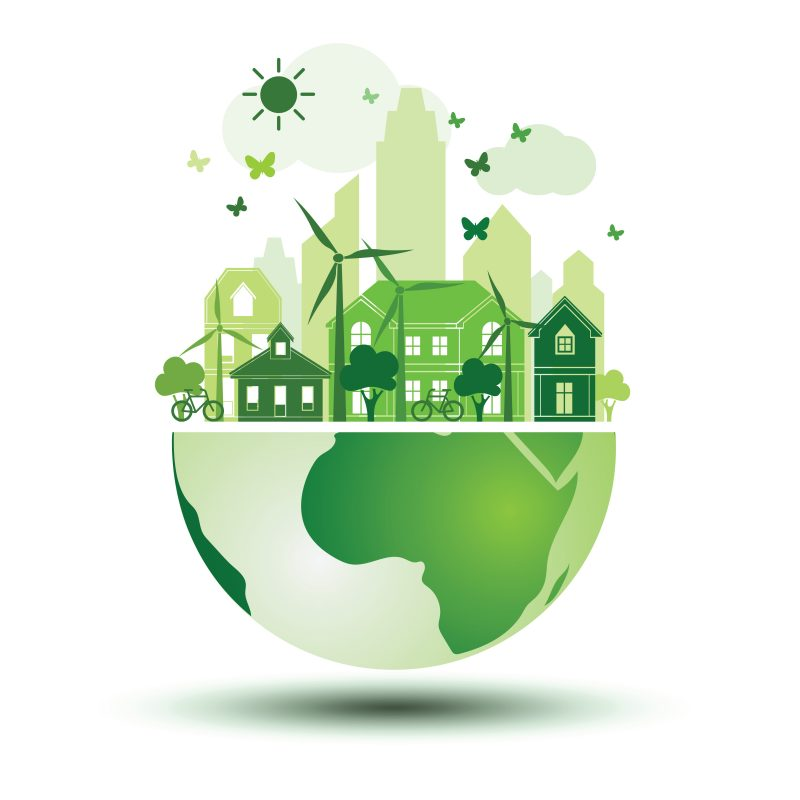

Green energy is energy produced from sources like the sun and wind that are naturally replenished and do not run out. Green energy can be used for electricity generation, space and water heating and cooling, and transportation. The main difference with these energy resources are that they don’t harm the environment through factors such as releasing greenhouse gases into the atmosphere. The Green energy industry generates hundreds of billions in economic activity, and is expected to continue to grow rapidly in the coming years. There is tremendous economic opportunity for the countries that invent, manufacture and export clean energy technologies. The different advantages of green energy are severely beneficial and affect the economy, environment, national security, and human health.
Here are some of the benefits of using renewable energy in the United States:
Enhanced reliability, security, and resilience of the nation’s power grid.
Job creation throughout renewable energy industries.
Reduced carbon emissions and air pollution from energy production.
Increased U.S. energy independence.
Increased affordability, as many types of renewable energy are cost-competitive with traditional energy sources.
Expanded clean energy access for non-grid-connected or remote, coastal, or islanded communities.

What do we do
Here at EcoNook, we look at many different kinds
of energy sources that are open and available to you.